전기철도기사 (2004-05-23 기출문제)
1과목: 전기철도공학
1. 전차선로의 가선방식에서 모노레일, 경전철에 적합한 가선방식은?
- 가공단선식
- 가공복선식
- 강체단선식
- 강체복선식
(정답률: 알수없음)

2. 직류 급전계통에서 전동차의 전동기 방식은 일반적으로 어떤 것을 사용하는가?
- 타여자전동기
- 직권전동기
- 분권전동기
- 복권전동기
(정답률: 알수없음)
3. 전차선로의 구분장치를 설치하는 장소가 아닌 곳은?
- 본선과 측선의 분리가 필요한 곳
- 본선과 차량 기지내로 연결되는 입·출고선
- 신호기가 설치된 곳
- 운전계통에 따른 사고 구간을 분리하는 곳
(정답률: 알수없음)
4. 직류 전철방식의 경우 귀선로에서 대지에 누설된 전류가 커지면 매설된 지중 금속체에 전식(電蝕)을 촉진시키고 오래되면 전식된다. 이때 전식량 W 를 나타내는 식은? (단, I[A]: 통전전류, t[s]: 전류 통과시간, Z: 금속체의 전기화학당량)
- W=ZＩt
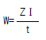
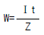
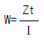
(정답률: 알수없음)
5. 지상구간 커티너리 가선방식에서 급전선과 합성전차선간의 최소 이격거리로 적당한 것은 몇 mm 인가?
- 200
- 250
- 300
- 550
(정답률: 알수없음)
6. 일반적으로 직류 방식의 전철 변전소는 그 간격을 몇 km정도로 하는가?
- 5∼20
- 20∼30
- 30∼40
- 40∼50
(정답률: 알수없음)
7. 50kg 궤조인 단선궤조의 특성저항은 몇 Ω 인가?(단, 궤조 2개의 병렬로 본드를 포함한 저항은 0.01627Ω/km 이고, 누설저항은 0.9Ω·km 이다.)
- 0.015
- 0.018
- 0.121
- 0.134
(정답률: 알수없음)
8. 전철 변전설비 중 개폐설비의 조작 순서가 맞는 것은?
- 개로시에는 차단기, 단로기 순이다.
- 개로시에는 단로기, 차단기 순이다.
- 폐로시에는 차단기, 단로기 순이다.
- 정전차폐만 하면 순서에 관계가 없다.
(정답률: 알수없음)
9. 급전선의 온도가 상승하면 어떻게 되는가?
- 이도는 크게 되고 장력이 작게 된다.
- 이도는 작게 되고 장력은 크게 된다.
- 이도와 장력이 크게 된다.
- 이도와 장력이 작게 된다.
(정답률: 알수없음)
10. 전차선로의 지지물 중 가동브래키트의 단점이 아닌 것은?
- 전차선의 경점을 적게 할 수 있다.
- 풍압하중에 견딜 수 있도록 기초를 강화해야 한다.
- 복잡한 역구내에 사용하기 곤란하다.
- 회전에 의해 전차선이 기준 편위를 벗어날 수 있다.
(정답률: 알수없음)
11. 전기차 팬터그래프의 이선현상에 관한 사항으로 옳지 않은 것은?
- 집전전류를 차단시킨다.
- 양질의 전력을 공급하기 위한 과정이다.
- 전기차 모터에 악영향을 준다.
- 팬터그래프의 수명을 단축시킨다.
(정답률: 알수없음)
12. 가공 전차선로에서 파동전파속도 C 를 구하는 식은? (단, T: 전차선의 장력, L: 전차선의 단위중량이다.)
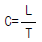
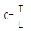
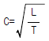
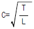
(정답률: 알수없음)
13. 직류 전차선로의 복선구간에서 전차선을 병렬 급전할 수 없는 단말 부분의 상선과 하선을 차단기를 통하여 접속할 수 있도록 한 설비는?
- 섹션 포스트
- 에어 섹션
- 정류 포스트
- 급전 타이 포스트
(정답률: 알수없음)
14. 가공 전차선로에서 양단의 가고가 같고 전차선이 수평인 경우 x 점에서의 행거 길이 L 은 몇 m 인가?(단, 경간 중앙에서의 이도를 0.3m, 가고는 1m, 임의의 점 x 에서의 이도를 0.15m로 한다.)
- 0.5
- 0.7
- 0.85
- 0.96
(정답률: 알수없음)
15. 가공 단선식 전차선의 직선구간에서 가공 전차선의 편위는 궤도면에 수직한 궤도 중심면에서 몇 mm 이내를 표준으로 하고 있는가?
- 150
- 200
- 250
- 300
(정답률: 알수없음)
16. 교류 강체 가선방식의 에어섹션에서 두 개의 컨덕트 레일간의 이격 거리는 몇 mm 인가?
- 150
- 200
- 250
- 300
(정답률: 알수없음)
17. 직류 전철방식에서 전식방지를 위한 전기적인 접속방법이 아닌 것은?
- 간접배류방식
- 직접배류방식
- 선택배류방식
- 강제배류방식
(정답률: 알수없음)
18. 섹션 인슐레이터용 절연체가 구비하여야 할 요건으로 잘못된 것은?
- 절연내력이 작고, 아크성이 강할 것
- 열화가 적고, 항장력이 클 것
- 열화가 적고 ,습기를 함유하지 않을 것
- 중량이 가볍고, 마모가 잘 되지 않을 것
(정답률: 알수없음)
19. 전기차의 구동설비를 구성하는 장치가 아닌 것은?
- 집전장치
- 변환장치
- 구동장치
- 견인장치
(정답률: 알수없음)
20. 강체 가선구간에서 차고 등 상시 팬터그래프가 승강하는 장소에서는 전차선과 팬터그래프의 접은 높이와의 거리가 몇 mm 이상이어야 하는가?
- 150
- 200
- 250
- 500
(정답률: 알수없음)
2과목: 전기철도 구조물공학
21. 단면계수와 같은 차원을 가지는 것은?
- 단면 1차 모멘트
- 단면 2차 모멘트
- 단면 상승모멘트
- 회전 반지름
(정답률: 알수없음)
22. 다음 중 지점의 종류가 아닌 것은?
- 이동지점
- 힌지지점
- 고정지점
- 정정지점
(정답률: 알수없음)
23. 힘의 단위로 1 dyne을 맞게 설명한 것은?
- 1g의 물체에 1cm/s 의 가속도가 생기게 하는 힘
- 1kg의 물체에 1m/s 의 가속도가 생기게 하는 힘
- 1g의 물체에 1cm/s2 의 가속도가 생기게 하는 힘
- 1kg의 물체에 1m/s2 의 가속도가 생기게 하는 힘
(정답률: 알수없음)
24. 전기철도 구조물에서 단독 지지주의 강도 계산을 위한 설계 조건과 거리가 가장 먼 것은?
- 해당 선로의 급전방식과 가선방식
- 사용 전선의 종류와 굵기
- 지지주의 중심점과 장력
- 선로 조건 및 전주 경간
(정답률: 알수없음)
25. 가공 전차선로에서 경간을 길게 하면 건설비는 적게 소요되지만 차량 동요나 풍압 등에 의하여 전력을 공급받는 집전장치에서 이탈될 수 있는 전선은?
- 전차선
- 흡상선
- 급전선
- 보호선
(정답률: 알수없음)
26. 전차선의 편위를 정하는 요소가 아닌 것은?
- 전기차 동요에 따른 집전장치의 편위
- 풍압에 따른 전차선의 편위
- 곡선로에 의한 전차선의 편위
- 열차 운행 빈번도에 따른 전차선의 편위
(정답률: 알수없음)
27. 전차선(Cu 110㎜2)과 조가선(CdCu 70㎜2)을 일괄하여 자동 조정하는 경우 표준장력의 합은 약 몇 kg 인가?
- 1800
- 2000
- 2300
- 2600
(정답률: 알수없음)
28. 2차원 구조물은 어느 것인가?
- 쉘 (shell)
- 아치(arch)
- 샤프트(shaft)
- 인장보(tension beam)
(정답률: 알수없음)
29. 전차선로에 사용되는 빔(beam)의 종류가 아닌 것은?
- 고정식
- 가동식
- 장력식
- 스팬선식
(정답률: 알수없음)
30. 지표면에서 높이가 12m인 단독 지지주에 30㎏f/m의 수평 분포하중이 작용하는 경우 4m 지지점에서의 전단력 Qh는 몇 ㎏f 인가?
- 180
- 220
- 240
- 320
(정답률: 알수없음)
31. 가공 전차선로에서 전차선의 인류용으로 가장 많이 사용되는 지선은?
- V형 지선
- 수평지선
- 보통지선
- 궁형지선
(정답률: 알수없음)
32. 풍속 35m/s의 바람을 받는 4각 전철주의 수직투영면적이 4m2 일 때 전철주의 전면에 가해지는 풍압은 약 몇 kgf인가? (단, 풍력계수는 1.53 이다.)
- 359
- 469
- 518
- 628
(정답률: 알수없음)
33. 기둥형 전주 기초를 터파기할 때 토양과 기초재의 접촉면에서의 강도 차를 보정하는데 사용하는 계수는?
- 지형계수(K)
- 강도계수(So)
- 형상계수(f)
- 안전율(Fs)
(정답률: 알수없음)
34. 철근 콘크리트 보에서 철근과 콘크리트가 받는 응력은 각각 어느 것인가?
- 철근은 압축력, 콘크리트는 압축력
- 철근은 인장력, 콘크리트는 압축력
- 철근은 인장력, 콘크리트는 인장력
- 철근은 압축력, 콘크리트는 인장력
(정답률: 알수없음)
35. 가공 전차선로에서 수평분포하중이 작용하는 단독 전철주의 지표부분 모멘트 M 은 어떻게 표현되는가? (단, W는 수평분포하중, L은 지표상에서의 전체 높이이다.)
- M=W
- M=L2W
- M=WL
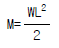
(정답률: 알수없음)
36. 응력과 변형도의 그림에서 D점의 명칭은 무엇인가?
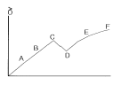
- 탄성한도
- 비례한도
- 상항복점
- 하항복점
(정답률: 알수없음)
37. 경사재의 중복수는 동일 장소에서 경사재가 겹치는 방법을 나타낸 것으로 일반적인 4각 철주가 단경사재일 경우 사재의 중복수는 얼마인가?
- 2
- 4
- 6
- 8
(정답률: 알수없음)
38. 차량 동요에 의한 집전장치의 기울기에 적용하는 차량동요 최고 각도는 몇 도인가?
- 2°
- 3°
- 5°
- 7°
(정답률: 알수없음)
39. 전차선로에 사용하는 지선 기초는 지지물 기초 인상력에 대한 안전도를 고려하여 지선 기초 안전률을 얼마 이상으로 적용하여 설계하여야 하는가?
- 1.5
- 2
- 2.5
- 3
(정답률: 알수없음)
40. 가공 전차선로에서 지지점과 인접 지지점간에 설치하여야 할 전주의 경간으로 적합한 것은?(단, 전차선의 편위는 0.2m, 곡선 반경은 500m이다.)
- 30m 정도
- 40m 정도
- 50m 정도
- 60m 정도
(정답률: 알수없음)
3과목: 전기자기학
41. Maxwell의 전자기파 방정식이 아닌 것은?
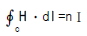
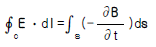
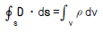
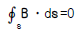
(정답률: 알수없음)
42. 면적 A[m2], 간격 d[m]인 평행판콘덴서의 전극판에 비유전률 εr 인 유전체를 가득히 채웠을 때 전극판간에 V[V]를 가하면 전극판을 떼어내는데 필요한 힘은 몇 N 인가?
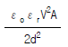
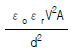
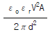
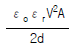
(정답률: 알수없음)
43. 반지름 a[m], 전하 Q[C]을 가진 두 개의 물방울이 합쳐서 한개의 물방울이 되었다. 합쳐진 후의 정전에너지를 합쳐지기 전과 비교하면 어떻게 되는가?
- 변화하지 않는다.
- 2배로 감소한다.
- 1/2로 감소한다.
- 증가한다.
(정답률: 알수없음)
44. N회 감긴 환상코일의 단면적이 S[m2]이고 평균 길이가 ℓ[m]이다. 이 코일의 권수를 반으로 줄이고 인덕턴스를 일정하게 하려고 할 때, 다음 중 옳은 것은?
- 단면적을 2배로 한다.
- 길이를 1/4 배로 한다.
- 전류의 세기를 4배로 한다.
- 비투자율을 2배로 한다.
(정답률: 알수없음)
45. 유전률 ε=10 이고 전계의 세기가 100V/m인 유전체 내부에 축적되는 에너지 밀도는 몇 Ｊ/m3 인가?
- 2.5×104
- 5×104
- 4.5×109
- 9×109
(정답률: 알수없음)
46. 전기회로에서 도전도(℧/m)에 대응하는 것은 자기회로에서 무엇인가?
- 자속
- 기자력
- 투자율
- 자기저항
(정답률: 알수없음)
47. 쌍극자 모멘트가 M[C·m]인 전기쌍극자에 의한 임의의 점 P의 전계의 크기는 전기쌍극자의 중심에서 축방향과 점 P를 잇는 선분사이의 각이 얼마일 때 최대가 되는가?
- 0
- π/2
- π/3
- π/4
(정답률: 알수없음)
48. 8m 길이의 도선으로 만들어진 정방형 코일에 π[A]가 흐를 때 정방형의 중심점에서의 자계의 세기는 몇 A/m 인가?
- √2/2
- √2
- 2√2
- 4√2
(정답률: 알수없음)
49. x ＞ 0 인 영역에서 ε1 = 3 인 유전체, x ＜ 0 인 영역에 ε2 = 5인 유전체가 있다. 유전률 ε2인 영역에서 전계 E2= 20ax+30ay-40az[V/m]일 때, 유전률 ε1인 영역에서의 전계 E1은 몇 V/m 인가?
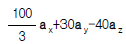
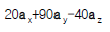
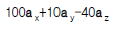
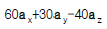
(정답률: 알수없음)
50. 환상철심에 권수 NA인 A코일과 권수 NB인 B코일이 있을 때, A코일의 자기인덕턴스가 LA[H]라면 두 코일의 상호인덕턴스는 몇 H 인가?
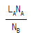
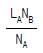
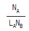
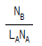
(정답률: 알수없음)
51. 무한장 직선도선에 흐르는 직류전류 Ｉ에 의해, 무한장 직선도선의 전류 상하에 존재하는 자침이, 그림과 같이 자침중심축을 중심으로 회전하여 정지하였다. (ㄱ) (ㄴ)(ㄷ) (ㄹ)의 극을 순서적으로 잘 배열한 것은?
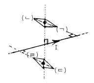
- S, N, S, N
- S, N, N, S
- N, S, N, S
- N, S, S, N
(정답률: 알수없음)
52. 면적 100cm2인 두장의 금속판을 0.5cm 인 일정 간격으로 평행 배치한 후 양판간에 1000V의 전위를 인가하였을 때 단위면적당 작용하는 흡인력은 몇 N/m2 인가?
- 1.77×10-1
- 1.77×10-2
- 3.54×10-1
- 3.54×10-2
(정답률: 알수없음)
53. 내도체의 반지름이 a[m]이고, 외도체의 내반지름이 b[m], 외반지름이 c[m]인 동축케이블의 단위길이당 자기인덕턴스는 몇 H/m 인가?
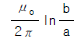
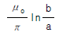
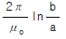
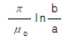
(정답률: 알수없음)
54. 10A의 전류가 흐르고 있는 도선이 자계내에서 운동하여 5Wb의 자속을 끊었다고 하면, 이 때 전자력이 한 일은 몇 Ｊ 인가?
- 25
- 50
- 75
- 100
(정답률: 알수없음)
55. 영역 1의 자유공간에서 전파 E0i[V/m]와 자파 H0i[A/m]가 비유전율 εr=3을 가진 유전체 영역으로 수직하게 입사될 때 계면에서의 값으로 옳은 것은?
- 반사 전파의 크기는 -0.268EE0i이다.
- 투과 전파의 크기는 0.732E0i이다.
- 반사 자파의 크기는 1.268H0i이다.
- 투과 자파의 크기는 1.268H0i이다.
(정답률: 알수없음)
56. 비유전률 4, 비투자율 4인 매질내에서의 전자파의 전파속도는 자유공간에서의 빛의 속도의 몇 배인가?
- 1/3
- 1/4
- 1/9
- 1/16
(정답률: 알수없음)
57. 자계 중에 이것과 직각으로 놓인 도선에 Ｉ[A]의 전류를 흘리니 F[N]의 힘이 작용하였다. 이 도선을 v[m/s]의 속도로 자계와 직각으로 운동시키면 기전력은 몇 V 인가?
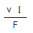
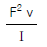
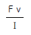
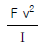
(정답률: 알수없음)
58. 면전하밀도가 ρs[C/m2]인 무한히 넓은 도체판에서 R[m] 만큼 떨어져 있는 점의 전계의 세기는 몇 V/m 인가?
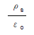
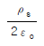
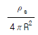
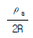
(정답률: 알수없음)
59. 전위함수 V=5x2y+z[V]일 때 점(2,-2,2)에서 체적전하밀도 ρ[C/m3]의 값은?
- 5εo
- 10εo
- 20εo
- 25εo
(정답률: 알수없음)
60. 강자성체의 히스테리시스 루프의 면적은?
- 강자성체의 단위 체적당의 필요한 에너지이다.
- 강자성체의 단위 면적당의 필요한 에너지이다.
- 강자성체의 단위 길이당의 필요한 에너지이다.
- 강자성체의 전체 체적의 필요한 에너지이다.
(정답률: 알수없음)
4과목: 전력공학
61. 온도가 t[℃]상승했을 때의 이도는 약 몇 m 정도 되는가? (단, 온도 변화전의 이도를 D1[m], 경간을 S[m], 전선의 온도계수를 α라 한다.)
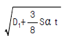
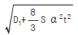
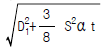
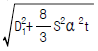
(정답률: 알수없음)
62. 배전선의 전력손실 경감 대책이 아닌 것은?
- Feeder 수를 늘린다.
- 역률을 개선한다.
- 배전 전압을 높인다.
- Network 방식을 채택한다.
(정답률: 알수없음)
63. 가공 송전선로에서 이상전압의 내습에 대한 대책으로 틀린 것은?
- 철탑의 탑각 접지저항을 작게 한다.
- 기기 보호용으로서의 피뢰기를 설치한다.
- 가공지선을 설치한다.
- 차폐각을 크게 한다.
(정답률: 알수없음)
64. 다음 중 전력원선도에서 알 수 없는 것은?
- 전력
- 역률
- 손실
- 코로나 손실
(정답률: 알수없음)
65. 중성점 직접 접지방식에 대한 설명으로 옳지 않은 것은?
- 1선 지락시 건전상의 전압은 거의 상승하지 않는 다.
- 변압기의 단절연(段絶緣)이 가능하다.
- 개폐 서지의 값을 저감시킬 수 있으므로 피뢰기의 책무를 경감시키고 그 효과를 증대시킬 수 있다.
- 1선 지락전류가 적어 차단기가 처리해야 할 전류가적다.
(정답률: 알수없음)
66. 보호계전기의 한시 특성 중 정한시에 관한 설명을 바르게 표현한 것은?
- 입력 크기에 관계없이 정해진 시간에 동작한다.
- 입력이 커질수록 정비례하여 동작한다.
- 입력 150%에서 0.2초 이내에 동작한다.
- 입력 200%에서 0.04초 이내에 동작한다.
(정답률: 알수없음)
67. 차단기 절연유를 여과한 후 절연내력을 시험하였을 때 절연내력은 최소 몇 kV 이상이면 양호한 것으로 판단 하는가? (단, 절연유 시험기기는 구직경 12.5mm로 간격 2.5mm에서 내압시험을 하였을 경우이다.)
- 15
- 30
- 50
- 100
(정답률: 알수없음)
68. 제3조파의 단락전류가 흘러서 일반적으로 사용되지 않는 변압기 결선방식은?
- △-Y
- Y-△
- Y-Y
- △-△
(정답률: 알수없음)
69. 송전 전력, 부하 역률, 송전 거리, 전력 손실 및 선간 전압이 같을 경우 3상3선식에서 전선 한 가닥에 흐르는 전류는 단상 2선식에서 전선 한 가닥에 흐르는 경우의 몇 배가 되는가?
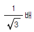
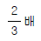
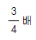
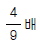
(정답률: 알수없음)
70. 저압 배전선로의 플리커(fliker) 전압의 억제 대책으로 볼 수 없는 것은?
- 내부 임피던스가 작은 대용량의 변압기를 선정한다.
- 배전선은 굵은 선으로 한다.
- 저압뱅킹방식 또는 네트워크방식으로 한다.
- 배전선로에 누전차단기를 설치한다.
(정답률: 알수없음)
71. 비등수형 원자로의 특색에 대한 설명이 틀린 것은?
- 열교환기가 필요하다.
- 기포에 의한 자기 제어성이 있다.
- 순환펌프로서는 급수펌프뿐이므로 펌프동력이 작다.
- 방사능 때문에 증기는 완전히 기수분리를 해야 한다.
(정답률: 알수없음)
72. 역률 개선용 콘덴서를 부하와 병렬로 연결하고자 한다. △결선방식과 Y결선방식을 비교하면 콘덴서의 정전용량 (단위: ㎌)의 크기는 어떠한가?
- △결선방식과 Y결선방식은 동일하다.
- Y결선방식이 △결선방식의 1/2용량이다.
- △결선방식이 Y결선방식의 1/3용량이다.
- Y결선방식이 △결선방식의
 용량이다.
용량이다.
(정답률: 알수없음)
73. 345kV 2회선 선로의 선로 길이가 220km 이다. 송전용량 계수법에 의하면 송전용량은 약 몇 MW 인가?(단, 345kV의 송전용량 계수는 1200 이다.)
- 525
- 650
- 1⑤0
- 1300
(정답률: 알수없음)
74. 유효낙차 100m, 최대사용수량 20m3/s인 발전소의 최대 출력은 약 몇 kW 인가?(단, 수차 및 발전기의 합성효율은 85% 라 한다.)
- 14160
- 16660
- 24990
- 33320
(정답률: 알수없음)
75. 다음 설명 중 옳지 않은 것은?
- 저압뱅킹방식은 전압 동요를 경감할 수 있다.
- 밸런서는 단상2선식에 필요하다.
- 수용률이란 최대수용전력을 설비용량으로 나눈 값을 퍼센트로 나타낸다.
- 배전선로의 부하율이 F일 때 손실계수는 F와 F2의 사이의 값이다.
(정답률: 알수없음)
76. 6.6kV 고압 배전선로(비접지 선로)에서 지락보호를 위하여 특별히 필요치 않은 것은?
- 과전류계전기(OCR)
- 선택접지계전기(SGR)
- 영상변류기(ZCT)
- 접지변압기(GPT)
(정답률: 알수없음)
77. 전력용콘덴서를 변전소에 설치할 때 직렬리액터를 설치코자 한다. 직렬리액터의 용량을 결정하는 식은? (단, fo 는 전원의 기본주파수, C 는 역률개선용콘덴서의 용량, L 은 직렬리액터의 용량임)
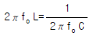
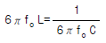
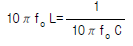
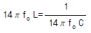
(정답률: 알수없음)
78. 기력발전소에서 1톤의 석탄으로 발생할 수 있는 전력량은 약 몇 kWh 인가?(단, 석탄의 발열량은 5500kcal/kg이고 발전소 효율을 33%로 한다.)
- 1860
- 2110
- 2580
- 2840
(정답률: 알수없음)
79. 3상용 차단기의 정격 차단용량은?
- 3 ×정격전압×정격차단전류
- 3×정격전압×정격차단전류
- 3 ×정격전압×정격전류
- 3×정격전압×정격전류
(정답률: 알수없음)
80. 그림과 같이 4단자 정수가 A1, B1, C1, D1인 송전선로의 양단에 Zs, Zr의 임피던스를 갖는 변압기가 연결된 경우의 합성 4단자정수 중 A 의 값은?
- A =C1
- A =B1+A1Zr
- A =A1+C1Zs
- A =D1+C1Zr
(정답률: 알수없음)